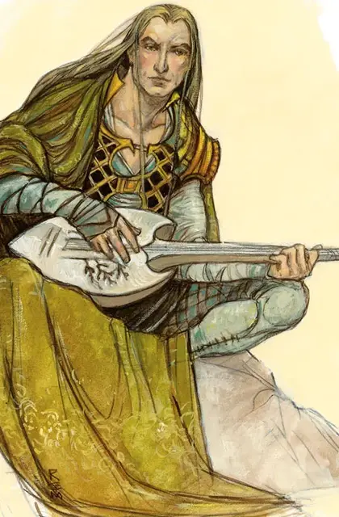

Бард
Bard
Средний Гуманоид (Любая раса), любое мировоззрение

Класс Доспеха 15 (кольчужная рубаха)
Хиты 44 (8к8 + 8)
Скорость 30 футов
| мод | спас | ||
|---|---|---|---|
| СИЛ | 11 | +0 | +0 |
| ЛОВ | 14 | +2 | +4 |
| ТЕЛ | 12 | +1 | +1 |
| мод | спас | ||
|---|---|---|---|
| ИНТ | 10 | +0 | +0 |
| МДР | 13 | +1 | +3 |
| ХАР | 14 | +2 | +2 |
Навыки Акробатика +4, Восприятие +5, Выступление +6
Чувства пассивное Восприятие 15
Языки любые два языка
Опасность 2 (450 опыта)
Бонус мастерства +2
Среда обитания Город
Действия
Мультиатака. Бард совершает две атаки Коротким мечом или Коротким луком. Он может заменить одну из атак Использованием заклинаний.
Короткий меч. Рукопашная атака оружием: +4 к попаданию, досягаемость 5 футов, одна цель. Попадание: 5 (1к6 + 2) колющего урона.
Короткий лук. Дальнобойная атака оружием: +4 к попаданию, дистанция 80/320 футов, одна цель. Попадание: 5 (1к6 + 2) колющего урона.
Какофония (перезарядка 4-6). Каждое существо в 15-футовом кубе, исходящем от барда, должно совершить спасбросок Телосложения Сл 12. При провале существо получает 9 (2к8) урона звуком и отбрасывается на расстояние до 10 футов от барда. При успехе существо получает половину этого урона и не отбрасывается.
Использование заклинаний. Бард накладывает одно из следующих заклинаний, используя Харизму в качестве базовой характеристики (Сл спасброска от заклинаний 12):
• Неограниченно: пляшущие огоньки [dancing lights], волшебная рука [mage hand], фокусы [prestidigitation];
• 1/день каждое: очарование личности [charm person], невидимость [invisibility], усыпление [sleep].
Бонусные действия
Насмешка (2/день). Бонусным действием в свой ход бард может выбрать одно существо в пределах 30 футов. Если цель может слышать барда, то цель должна преуспеть в спасброске Харизмы Сл 12, иначе до конца следующего хода барда будет вынуждена совершать все проверки характеристик, броски атак и спасброски с помехой.
Описание
Барды – одаренные поэты, рассказчики и артисты, которые повсюду путешествуют, но чаще всего находятся в тавернах или в веселых группах приключенцев, наемных бойцов и влиятельных покровителей.
Каждый бард является мастером по крайней мере в одном из типов выступления. Вы можете самостоятельно выбрать тип деятельность барда или воспользоваться таблицей "Виды выступления барда", чтобы определить его.
Виды выступления барда
| к10 | Выступление |
| 1 | Поэзия |
| 2 | Пение |
| 3 | Игра на волынке |
| 4 | Игра на флейте |
| 5 | Танцы |
| 6 | Игра на барабанах |
| 7 | Игра на лютне |
| 8 | Кукольный театр |
| 9 | Искусство пантомимы |
| 10 | Актёрское выступление |